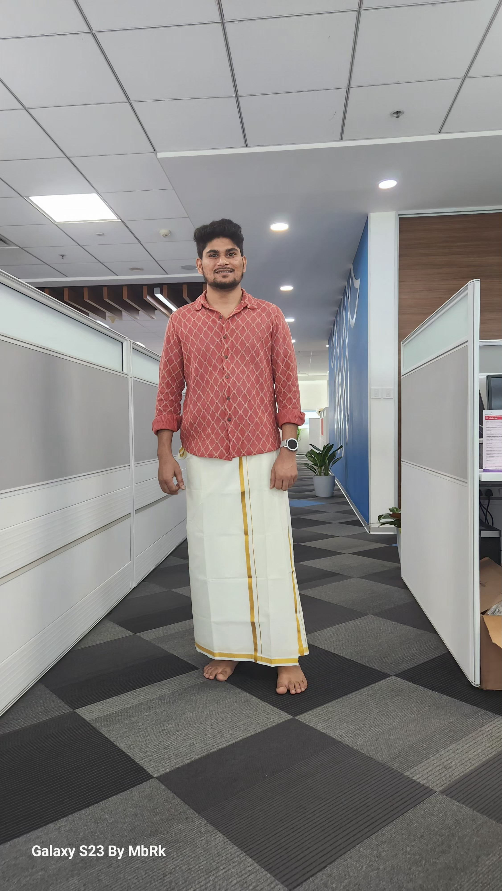
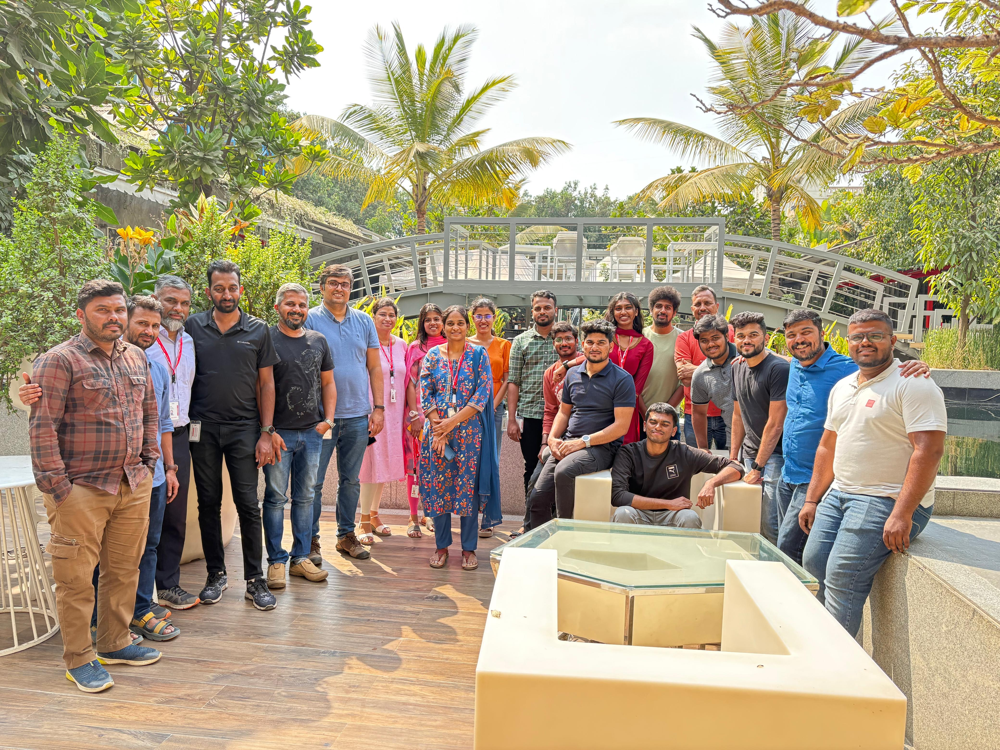
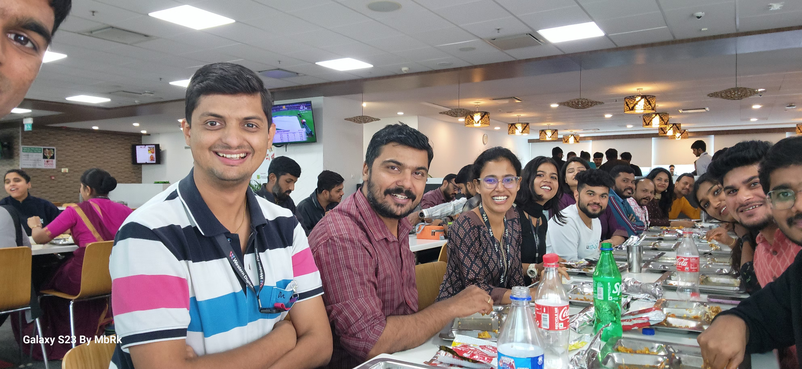
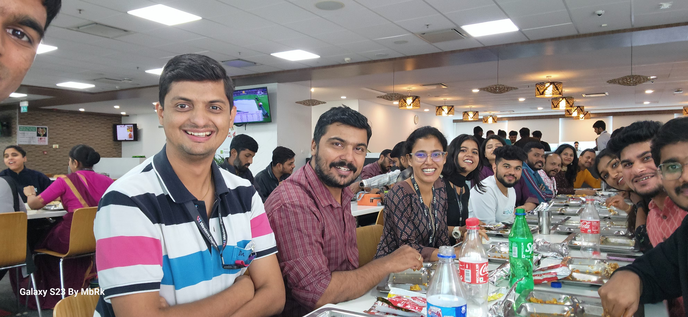

Mubarak Ali
I ❤️ music
I'm working in ASIC and PCIe validation department. In the world of ASIC and PCIe validation, your work is a critical blend of automation and meticulous detective work. Running regressions with Jenkins provides the automated framework for systematic testing, but the real challenge begins when a test fails. You then transition into the role of a troubleshooter, wielding a suite of powerful tools. The Metaware debugger allows you to peer deep into the software's execution, while JTAG provides a low-level window into the hardware's state. PCIe protocol analyzers are essential for deciphering the complex data traffic on the interface,helping you pinpoint the exact moment and cause of a protocol violation. This multi-tool approach ensures you can efficiently isolate and rectify any issue, guaranteeing the hardware's robustness
 
 

Education
- 10th Class (Allahabad Board) : 72%
- 12th Class (Allahabad Board) : 56%
- Diploma in Electronics and communication Engineering (CBSE) : 79%
- Bachelors in Electronics and communication Engineering (BIT) : 7.5 CGPA
Skills
- JAVA
- MySQL
- Python
- C
- Embedded C
- Debugging
- J-TAG
- ANALYZER
- Instrument Handling like Oscilloscopes, Power supplies, Analog and Digital Multimeters
- Procurement
- Through Hole and SMD Soldering, Desoldering, PCB Layout, Schematic drawing / diagram
Hobbies
- Listening and singing Music
- Playing Cricket
- Playing Badminton
- Playing Carom